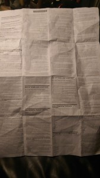
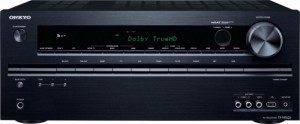

February 15, 2015
I <3 compliance!

The Onkyo TX-NR626 looks almost identical to a stereo receiver you could have bought from Onkyo in the 80s and 90s. In fact, the chases is the same, save for a few extra buttons, and the form factors of the inputs/outputs in the back. A 95W per channel, supporting 7.2 channels, this sucker packs a meaner punch than my UWS apartment (or, more accurately, my neighbors) can stomach. But don’t let it’s outer shell fool you. But, the guts of this gadget have been updated for the 21st century, with flair.
+++
I love traveling and I travel alot. In the past few years I have added a fun toy to my travel kit – a small, portable bluetooth speaker. I am currently using the Logitech UE Mini Boom, which sounds so much better than the tinny, built-in laptop speakers it’s worth lugging along. Normally, I plug a cheap audio wire into my phone to connect it to the speaker, but the wire connection started acting flakey and I bluetoothed while vacationing in Florida, Philly and the Hudson Valley. I really enjoyed dialing up my entire music collection from across the room over the would-be miracle that bluetooth promised. So much so that I started wondering why I couldn’t do the same at home.
For the better part of the last decade my home workstation, a mac mini, has been my media hub and jukebox. Back in ’98, I started ripping my CD collection even before I owned an MP3 player, anticipating the day when my digital collection would pay off in spades. Every night I would connect to the internet over my dial-up modem, pull down the album metadata from CDDB, and would typically digitize one or two CDs per night. Maybe a few more over the weekend. After a year my collection was digitized. My first MP3 player was a Rio Diamond 500 with a paltry 64MG of storage. I hated selecting playlists, and dreamed of the day when my entire collection would be at my fingertips. Inevitably, I would neglect to load new music on my Rio, and be stuck listening to the wrong music.
In recent months I have become increasingly frustrated with my home jukebox setup. I’ve installed CrashPlan on my Mac, a java based backup programming that is incessantly hogging resources and causing frustrating delays in my access to music. I’m also disgusted with Apple’s oppressive policies, and have begun to second guess my decision to make my workstation my media hub. Last year I ditched my iPod in favor of a SanDisk Sansa Clip running the open-source RockBox, but a few months back I upgraded my HTC phone to a model that takes an microSD card, and have been enjoying my entire collection on my phone.
I can now send music to my new stereo receiver from my phone, tablet and computer. I can also connect to the internet, and I love it. Sometimes, you just want an appliance with an old fashioned remote control, not a general purpose computing device.
+++

For years, Eben Moglen has been claiming that hardware manufacturers have embraced FLOSS, but this device crystalized for me the obvious advantages. Onkyo is a stereo component manufacturer. The last thing they want to deal with is hiring an army of developers to wrestle with SSL to support wifi passwords or develop boilerplate settings interfaces. The sheer quantity of software required to create modern consumer electronics is staggering, and I am fairly certain that without free software this receiver would have easily cost 1.5-2 times the price, and probably had fewer features.
From automobiles to DVD players, computers are being grafted onto every device we interact with. The better ones are being reimagined and built around computers, instead of vice-versa. There are an awful lot of protocols and standards to support. It makes me really happy to know that we all have friends in embedded places – greasing the nooks and crannies of 21st century electronics.
 Filed by Jonah at 11:28 pm under aesthetics,earth,freeculture
Filed by Jonah at 11:28 pm under aesthetics,earth,freeculture
 1 Comment
1 Comment

{kind=link}
{kind=link}
This is a very useful post. Thanks, Kyra. Great to meet you tonight after #TtW15